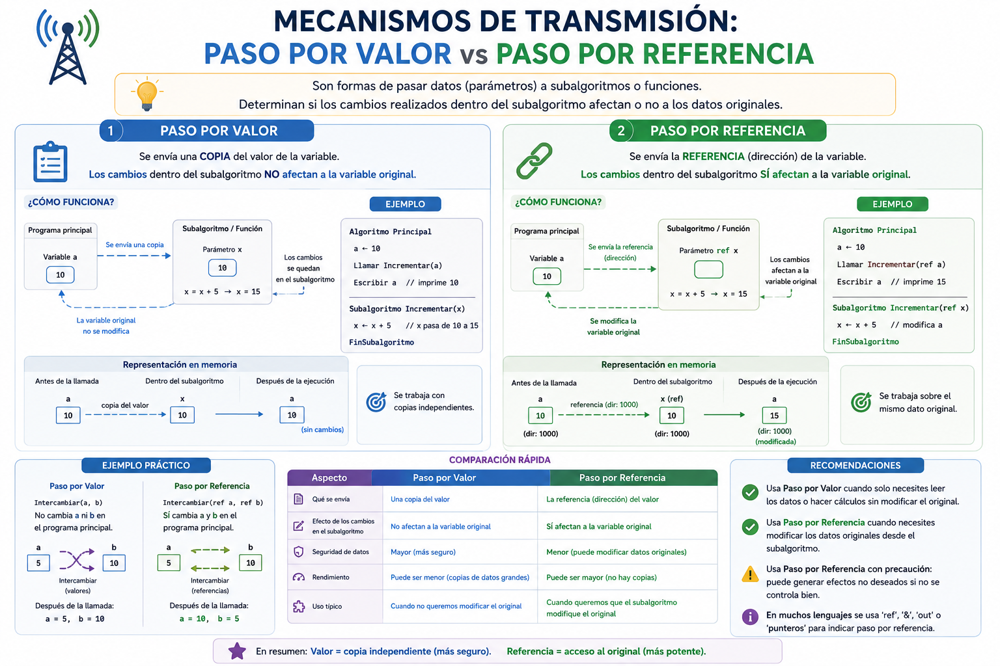

Imagina que tienes una hoja con un reporte contable oficial guardado bajo llave en tu escritorio. Si un compañero te pide los datos para un análisis rápido, tienes dos opciones: sacarle una fotocopia y entregársela (Paso por Valor); cualquier rayón que él haga en la copia no dañará tu documento original. O bien, prestarle el reporte original firmado (Paso por Referencia); cualquier tachadura o cambio que él realice modificará directamente tu documento para siempre. Lo mismo ocurre con las variables enviadas a las funciones en programación.
⚠️ Debes visualizar el video completo sin adelantar para desbloquear la evaluación.
Material audiovisual adaptado con fines estrictamente educativos. Créditos del autor: Aprende a programar.

Al invocar una función pasándole variables de argumento, el lenguaje de programación utiliza mecanismos específicos en la asignación de memoria para tratar dichas transferencias de datos.
¿Qué sucede con la variable original del programa principal en un Paso por Valor?
¿Qué recibe exactamente una función cuando se utiliza el mecanismo de Paso por Referencia?
En la analogía del reporte contable, ¿qué representaría entregar una fotocopia del archivo?
Si una función altera un parámetro recibido "Por Referencia", ¿qué ocurre al regresar al algoritmo principal?
¿Qué define el Concepto de Ámbito (Scope) de una variable?
¿Cómo se comportan las variables locales declaradas dentro de una función secundaria?
Si solo deseas que una función consulte la edad de un usuario para imprimirla sin arriesgarse a cambiarla, ¿qué mecanismo eliges?
Si deseas construir una función que deba actualizar y modificar directamente el saldo neto de una cuenta de banco externa, ¿qué paso aplicas?
En pseudocódigo (como PSeInt), ¿qué palabra clave explícita se añade para activar el enlace directo de memoria?
¿Qué ventaja de rendimiento en memoria RAM puede ofrecer el paso por referencia al trabajar con estructuras de datos masivas?